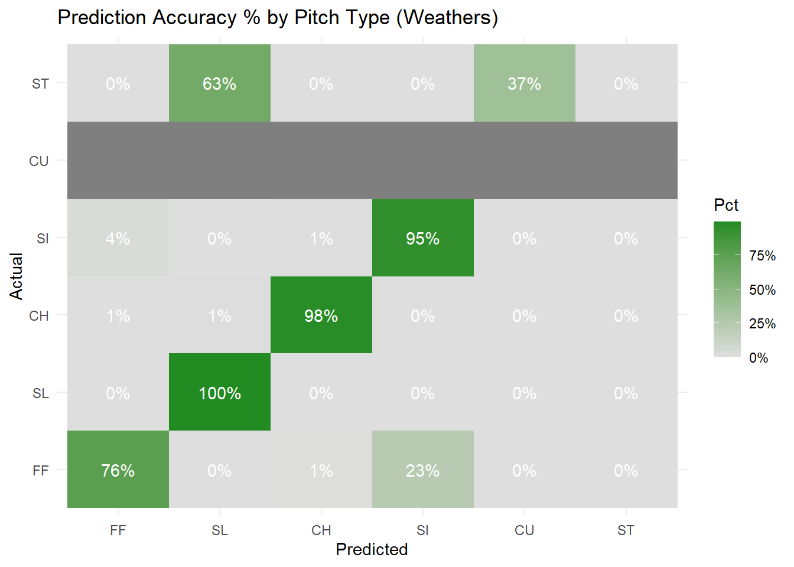

Warning: Using `size` aesthetic for lines was deprecated in ggplot2 3.4.0.
ℹ Please use `linewidth` instead.
ℹ The deprecated feature was likely used in the ggpubr package.
Please report the issue at <https://github.com/kassambara/ggpubr/issues>.
Warning in check.deprecation(deprecated_train_params, match.call(), ...):
Passed invalid function arguments: num_class. These should be passed as a list
to argument 'params'. Conversion from argument to 'params' entry will be done
automatically, but this behavior will become an error in a future version.
Warning in check.custom.obj(params, objective): Argument 'objective' is only
for custom objectives. For built-in objectives, pass the objective under
'params'. This warning will become an error in a future version.
Confusion Matrix and Statistics
Reference
Prediction CH CU FF SI SL
CH 631 0 0 1 0
CU 0 144 0 0 1
FF 0 0 905 8 1
SI 1 0 3 467 0
SL 0 0 0 0 493
Overall Statistics
Accuracy : 0.9944
95% CI : (0.9907, 0.9968)
No Information Rate : 0.342
P-Value [Acc > NIR] : < 2.2e-16
Kappa : 0.9925
Mcnemar's Test P-Value : NA
Statistics by Class:
Class: CH Class: CU Class: FF Class: SI Class: SL
Sensitivity 0.9984 1.00000 0.9967 0.9811 0.9960
Specificity 0.9995 0.99960 0.9948 0.9982 1.0000
Pos Pred Value 0.9984 0.99310 0.9902 0.9915 1.0000
Neg Pred Value 0.9995 1.00000 0.9983 0.9959 0.9991
Prevalence 0.2380 0.05424 0.3420 0.1793 0.1864
Detection Rate 0.2377 0.05424 0.3409 0.1759 0.1857
Detection Prevalence 0.2380 0.05461 0.3443 0.1774 0.1857
Balanced Accuracy 0.9990 0.99980 0.9958 0.9896 0.9980
# visualgraph_widget <-xgb.plot.tree(model = xgb_fit, tree_idx =1)# 2. Convert the widget to SVG code# This bridges the gap since we can't use render=FALSE anymoresvg_code <-export_svg(graph_widget)# 3. Export to High-Res PDF (Best for reports)rsvg_pdf(charToRaw(svg_code), file ="./Visuals/skubal_tree_highres.pdf")# 4. Export to High-Res PNG (Best for slides)# width/height control the resolutionrsvg_png(charToRaw(svg_code), file ="./Visuals/skubal_tree_highres.png", width =3000)
Does this model perform well on other pitchers?
Ryan Weathers is also a left-handed pitcher with a similar arsenal, he throws a sweeper instead of a typical curveball, however.
Confusion Matrix and Statistics
Reference
Prediction FF SL CH SI CU ST
FF 1878 0 5 14 0 0
SL 0 570 12 0 0 439
CH 20 0 974 5 0 1
SI 562 0 4 369 0 0
CU 0 1 0 0 0 258
ST 0 0 0 0 0 0
Overall Statistics
Accuracy : 0.7416
95% CI : (0.7294, 0.7535)
No Information Rate : 0.4812
P-Value [Acc > NIR] : < 2.2e-16
Kappa : 0.6541
Mcnemar's Test P-Value : NA
Statistics by Class:
Class: FF Class: SL Class: CH Class: SI Class: CU
Sensitivity 0.7634 0.9982 0.9789 0.95103 NA
Specificity 0.9928 0.9007 0.9937 0.88019 0.94933
Pos Pred Value 0.9900 0.5583 0.9740 0.39465 NA
Neg Pred Value 0.8190 0.9998 0.9949 0.99545 NA
Prevalence 0.4812 0.1117 0.1946 0.07590 0.00000
Detection Rate 0.3674 0.1115 0.1905 0.07218 0.00000
Detection Prevalence 0.3711 0.1997 0.1956 0.18290 0.05067
Balanced Accuracy 0.8781 0.9495 0.9863 0.91561 NA
Class: ST
Sensitivity 0.0000
Specificity 1.0000
Pos Pred Value NaN
Neg Pred Value 0.8635
Prevalence 0.1365
Detection Rate 0.0000
Detection Prevalence 0.0000
Balanced Accuracy 0.5000
# Plot percentages (Recall)as.data.frame(cm1$table) %>%group_by(Reference) %>%mutate(Pct = Freq /sum(Freq)) %>%ggplot(aes(Prediction, Reference, fill = Pct)) +geom_tile() +geom_text(aes(label = scales::percent(Pct, accuracy =1)), color ="white") +scale_fill_gradient(low ="gray87", high ="forestgreen", labels = scales::percent) +labs(title ="Prediction Accuracy % by Pitch Type (Weathers)", x ="Predicted", y ="Actual") +theme_minimal()
Warning: Removed 6 rows containing missing values or values outside the scale range
(`geom_text()`).

The model did pretty decently overall, with at least 87% balanced accuracy for all pitches that were in the training data (those in Skubal’s Arsenal). However, Ryan Weathers has a pretty similar movement profile as Skubal, so next I’ll look at a pitcher with some of the same pitches, but maybe not quite as elite of a movement profile as these two, that being Patrick Sandoval, he’s pretty much perfect for this because he throws the same 5 pitches as skubal does, according to baseballsavant.com.